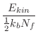
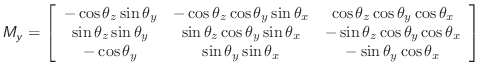

Next: Equations used in the Up: Optimization of the objective Previous: Function Contents Index
MODELLER currently implements a Beale restart conjugate gradients algorithm [Shanno & Phua, 1980,Shanno & Phua, 1982] and a molecular dynamics procedure with the leap-frog Verlet integrator [Verlet, 1967]. The conjugate gradients optimizer is usually used in combination with the variable target function method [Braun & Gõ, 1985] which is implemented with the AutoModel class (Section A.4). The molecular dynamics procedure can be used in a simulated annealing protocol that is also implemented with the AutoModel class.
Force in MODELLER is obtained by equating the objective function  with internal energy in kcal/mole. The atomic masses are all set to
that of C12 (MODELLER unit is kg/mole). The initial velocities
at a given temperature are obtained from a Gaussian random number
generator with a mean and standard deviation of:
with internal energy in kcal/mole. The atomic masses are all set to
that of C12 (MODELLER unit is kg/mole). The initial velocities
at a given temperature are obtained from a Gaussian random number
generator with a mean and standard deviation of:
| 0 | (A.7) | ||
| (A.8) |
The Newtonian equations of motion are integrated by the leap-frog Verlet
algorithm [Verlet, 1967]:
| (A.11) | |||
|  | (A.12) | ||
| (A.13) |
Langevin dynamics (LD) are implemented as in [Loncharich et al., 1992]. The equations of motion (Equation A.9) are modified as follows:
| (A.15) |
MODELLER also implements the self-guided MD [Wu & Wang, 1999] and LD [Wu & Brooks, 2003]
methods. For self-guided MD, the equations of motion (Equation A.9)
are modified as follows:
For self-guided Langevin dynamics, the guiding forces are determined as follows (terms are as defined in Equation A.14):
| (A.18) |
A scaling parameter χ is then determined by first making an unconstrained
half step:
| (A.19) | |||
| (A.20) | |||
| (A.21) |
Finally, the velocities are advanced using the scaling factor:
Where rigid bodies are used, these are optimized separately from the other atoms in the system. This has the additional advantage of reducing the number of degrees of freedom.
For the rotational motion, the orientation quaternions are again integrated using the same Verlet equations. For this, the quaternion accelerations are calculated using the following relation [Rapaport, 1997]:
| (A.24) |
| (A.25) |
| (A.26) |
| (A.27) |
The torque, , in the body-fixed frame, is calculated as
| (A.28) |
| (A.29) |
| (A.30) |
The kinetic energy of each rigid body (used for temperature control) is given as a combination of translation and rotational components:
| (A.31) |
Initial translational and rotational velocities of each rigid body are set in the same way as for atomistic dynamics.
| (A.32) |
| (A.33) |
|  | (A.34) |
| (A.35) |
The atomic positions are reconstructed when necessary from the body's orientation by means of the following relation:
| (A.36) |
| (A.37) |